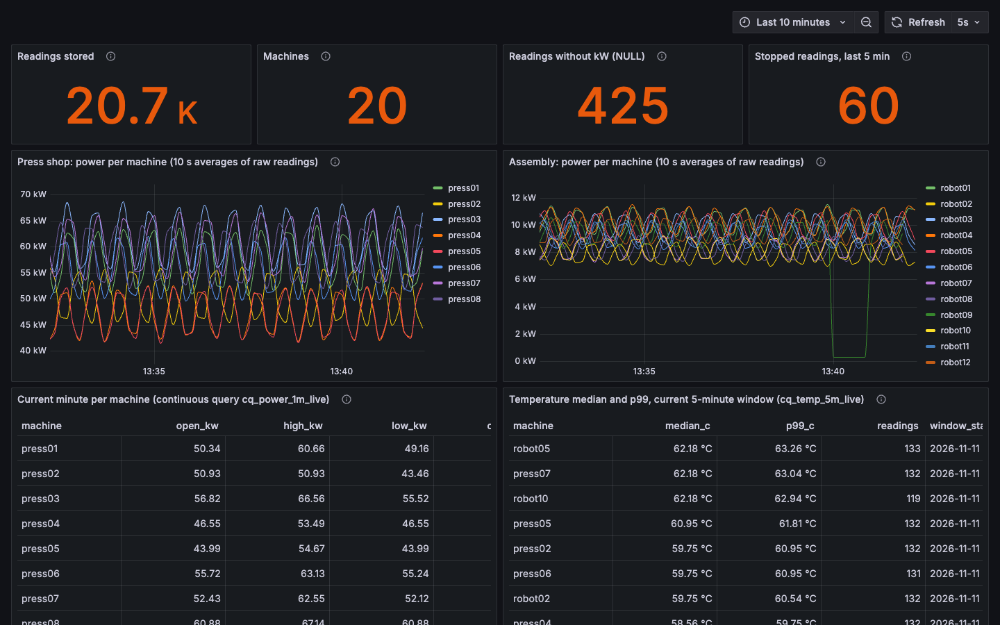

Stream in. Query in milliseconds.
ANKAA is a real-time time-series engine for Arm servers. Readings from machines, meters, sensors and markets arrive over MQTT, Kafka, NATS or exchange feeds, become queryable with SQL within milliseconds, stay up to date as live aggregates, and are compressed to disk for months of history. One binary. No pipeline to glue together.
# MQTT topics: plant1/<line>/<machine>/power [[sources]] kind = "mqtt" url = "mqtt://broker.plant1:1883" subject = "plant1/+/+/power" map = { ts = "t", line = "$topic.1", machine = "$topic.2", kw = "kw" } -- milliseconds after the readings arrive SELECT machine, max(kw), count(kw) FROM power WHERE ts > now() - interval '5 minutes' GROUP BY machine; -- live 1-minute bars, maintained as data arrives SELECT * FROM cq_power_1m_live;
The problem
Fresh data and fast queries live in different systems.
So the answer to a simple question arrives late, or not at all.
On a production line, a press starts drawing 15 % more power at 02:00. By morning someone asks for the per-machine power bars through the night and the p99 over the last five minutes. The readings were on the MQTT broker all along. Answering takes a stream processor, a database, a scheduled job and a dashboard that polls them.
On a trading desk, the book moves 2 % in four seconds. The next question is the quote in force at every trade and one-second bars through the move. The answer is a capture file, an order-book rebuild and an afternoon in pandas.
The answer
ANKAA makes fresh data a query: the reading that arrived 5 ms ago and the one from last quarter, in the same table, with the same SQL.
One process, end to end
Ingest, write-ahead log, columnar storage, live aggregates and the SQL engine share memory. Nothing to synchronise, no second copy of the data.
Built for the Arm servers you already rent
Graviton, Axion and Cobalt are the most cost-efficient CPUs in each major cloud. ANKAA's hot loops target them directly, with NEON and vector-length-agnostic SVE2 kernels.
Open standards, no lock-in
Apache Arrow in memory and on the wire, DataFusion SQL, the Postgres protocol, Vortex columnar files, MQTT, Kafka and NATS in. Apache-2.0.
Verified, not just tested
Correctness first. Numbers only from real hardware.
Every claim on this page links to a test or a script you can run. Performance is measured on named Arm servers, published with its raw data, and never extrapolated.
One engine, many feeds
Proven on the hardest feed. Built for every time series.
Exchange market data is the most demanding real-time stream there is: bursts of hundreds of thousands of messages per second, strict sequence numbers, nanosecond timestamps, exact decimals, order books that must never drift. ANKAA was built and proven on it first. The same storage, durability, live aggregates and SQL serve any table you declare.
Machines, lines and plants
Subscribe to the MQTT broker the PLC gateways already publish to. Line and machine come from the topic, missing readings are stored as NULL, buffered gateway data is accepted late and placed in time.
Meters, grids and assets
Exact fixed-point decimals for energy and money, per-meter partitions, retention windows per table, and quarter-hour bars or quantiles maintained continuously instead of recomputed by a batch job.
Trades, quotes and order books
Binance JSON and SBE, Databento files, exact L2 books from snapshot plus diffs, sequence-gap detection, ASOF joins, OHLCV, rolling windows and VWAP in SQL.
Many devices, each on its own clock
One partition per device with its own watermark and late-data window, so a vehicle that reconnects after a tunnel does not hold back the rest. Tested with 100,000 devices in one table.
Topics into tables
Turn a busy Kafka topic or NATS subject into queryable tables and live aggregates without adding a stream processor and a second database. Resumes from its saved offsets after a restart.
Declare a table, attach a source
Six column types, JSON, CSV, InfluxDB line protocol or Sparkplug B, field paths, tag and field names or topic segments, batches of readings in one message, exact decimal parsing. A custom binary protocol plugs into the same framing, WAL and recovery path.
Architecture
A single-node engine that scales up on one Arm server.
Every message travels the same path: decoded once, logged, appended to columnar chunks partitioned by key, visible to SQL at the next snapshot (50 ms by default), aggregated live, then compressed down the tiers. A standby can stream the log for read scaling and failover.
Capabilities
What ships in the binary.
Everything below is implemented and covered by tests in the repository today.
Ingest
- MQTT over TLS (private CA, client certificates) with topic-segment mapping
- Kafka over TLS with SASL (all partitions, saved offsets) and NATS
- Batched messages: one row per array element
- Binance JSON and SBE, REST depth snapshots
- Databento DBN, Parquet, CSV, NDJSON replay
Time semantics
- Per-key watermarks and ordering
- Bounded lateness: late rows inserted in time order
- Event-time continuous queries, deterministic on rebuild
- Nanosecond event and receive times kept apart
Storage
- 64k-row columnar chunks, 1,024-row block statistics
- Vortex warm and cold tiers (ALP, FastLanes, dictionary)
- Nullable columns with validity bitmaps in every tier
- Retention per table, measured in event time
Durability
- Write-ahead log with CRC32C and group commit
- Exact crash recovery, checkpoints truncate the log
- Segments restore without the WAL
- Standby replication over Arrow Flight
Query
- SQL via Apache DataFusion with time and key pruning
- Hash-free aggregation answered from block statistics
asof_join,ohlcv,rolling,percentiles,gapfill,latest,vwap- Continuous queries readable as tables
Operate
- One binary, one TOML file, fail-fast config checks
- TLS, mutual TLS and tokens on Flight
- Prometheus metrics, alert rules, Grafana dashboard
- Bounded query memory, timeouts, hardened systemd unit
Measured in the open
A first look on Google Axion.
A comparison harness against DuckDB, ClickHouse and QuestDB lives in the repository. Its first runs on a small Axion VM are published with scripts and raw results so anyone can rerun them and find what we got wrong.
| Query (selection) | ANKAA over Flight | DuckDB | ClickHouse | QuestDB |
|---|---|---|---|---|
| Range count | 0.47 | 1.57 | 5.06 | 1.23 |
| Aggregate by symbol | 0.67 | 3.03 | 5.81 | 6.74 |
| 1-second OHLCV bars | 4.38 | 21.1 | 75.7 | 43.6 |
| Percentiles of price | 3.83 | 50.6 | 13.0 | 631 |
| ASOF join (backward), aggregated | 7.27 | 25.6 | 16.2 | 92.8 |
| Latest row per symbol | 2.51 | 4.16 | 10.6 | 15.7 |
Median milliseconds, lower is better. 6 of the 17 queries shown; all 17, p95s, timing scopes and the environment are on the measurements page.
Quickstart
A live plant in SQL, with one command.
The factory demo starts an MQTT broker, a simulated plant of 20 machines, ANKAA and a Grafana dashboard. Requires Docker. The Unified Namespace tutorial walks through it and points it at your own broker.
git clone https://github.com/ualsweb/ankaa && cd ankaa/examples/factory docker compose up -d # then open http://localhost:3000 # or run the server image on its own (linux/arm64, linux/amd64) docker run --rm -e ANKAA_TOKEN=change-me-to-16-chars -p 5432:5432 ghcr.io/ualsweb/ankaa:latest

Without Docker: install Rust; a 20-second capture of live Binance data ships with the repository.
git clone https://github.com/ualsweb/ankaa && cd ankaa cargo run --release -p ankaad -- replay \ bench/data/binance-btcusdt-trade-depth-20s.ankc \ --sql "SELECT * FROM ohlcv('trades', 1000000000) LIMIT 5"
# offline: serve the bundled capture as if it were live ANKAA_TOKEN=devtoken cargo run --release -p ankaad -- serve \ --url file://bench/data/binance-btcusdt-trade-depth-20s.ankc \ --no-depth-snapshots --pg-addr 127.0.0.1:55432 # any Postgres client, Arrow Flight or Python PGPASSWORD=devtoken psql -h 127.0.0.1 -p 55432 -U ankaa \ -c "SELECT count(*) FROM trades"
[[tables]] name = "power" partition_by = "machine" max_lateness_ms = 300000 # gateways buffer retention = "180d" columns = [ { name = "ts", type = "timestamp_ns" }, { name = "machine", type = "dict" }, { name = "kw", type = "float64", nullable = true }, ] [[continuous]] name = "power_1m" # → cq_power_1m, cq_power_1m_live kind = "ohlcv" table = "power" key = "machine" value = "kw" width_ns = 60000000000
import ankaa live = ankaa.connect("127.0.0.1:50051", token="devtoken") bars = live.sql("SELECT * FROM cq_power_1m_live").to_pandas() p99 = live.sql(""" SELECT * FROM percentiles('power', 'kw', '0.5,0.99', 'machine') """).to_pandas() # zero-copy Arrow underneath; polars works the same way
Project status
Pre-alpha, and explicit about it.
The engine is implemented and verified end to end. What is still open needs real hardware or wall-clock time, and is listed rather than hidden.
Get involved
Shape the engine with your data.
ANKAA is Apache-2.0, free to use, modify and run commercially. The most valuable contributions right now are real workloads and real hardware.
Design partners
Run it on your plant, meter, fleet or market feeds with our help, at no cost, and tell us what breaks. What you get, what we ask.
Hardware and cloud partners
Access to Arm server instances for public, reproducible benchmarks moves the project forward most.
Contributors
Sources and decoders, SQL functions, docs. Start with CONTRIBUTING.md (DCO sign-off, RFCs for design changes).